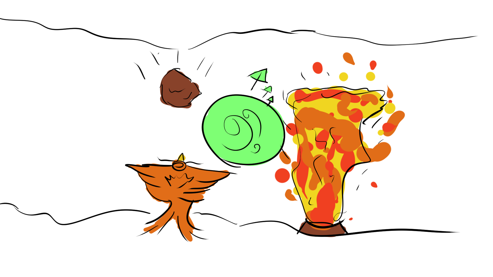
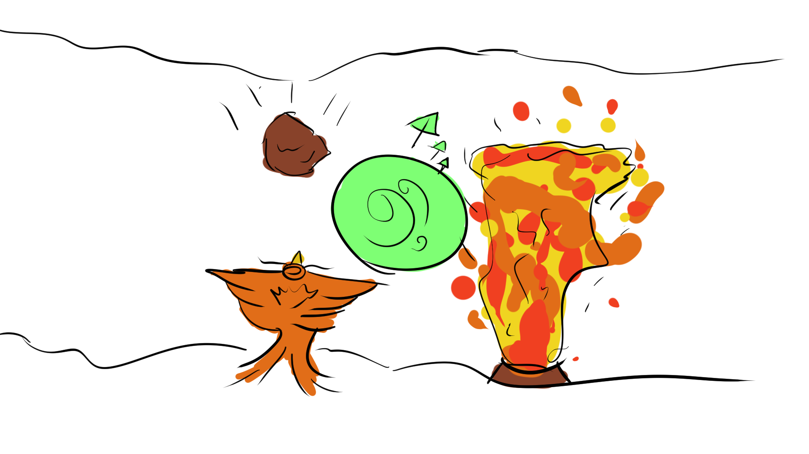
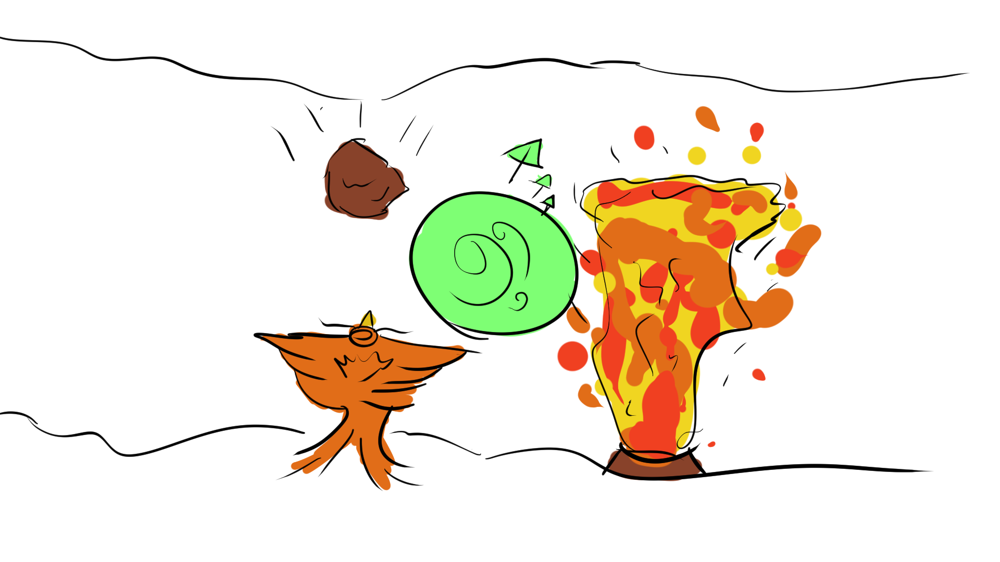

Gallery
Images


 



Gifs


Submitted as part of the Game Dev Network Games Jam 2021
This was the first games Jam I did outside of University.
Flight of the Phoenix is an endless runner where the player controls a phoenix flying through a chasm.
As the theme for this GamesJam was Rebirth, we decided to incorporate a rebirth mechanic. When the player gains 10 coins they are able to revive when they crash, In doing so they will be “reborn” and will lose all coins in their current position.
Flight of the Phoenix is an endless runner where the player controls a phoenix flying through a chasm. With the power of rebirth at your disposal how long will you last.

Please check out my team's work:
Art: